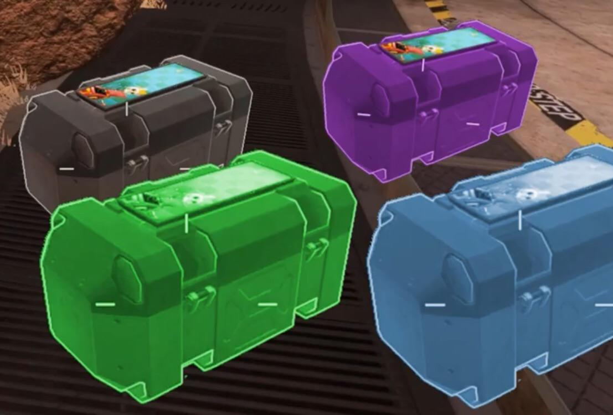
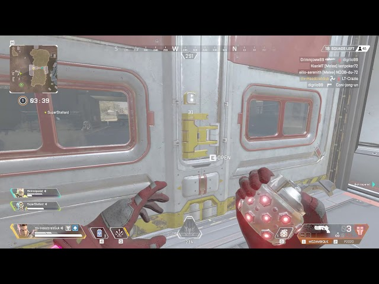
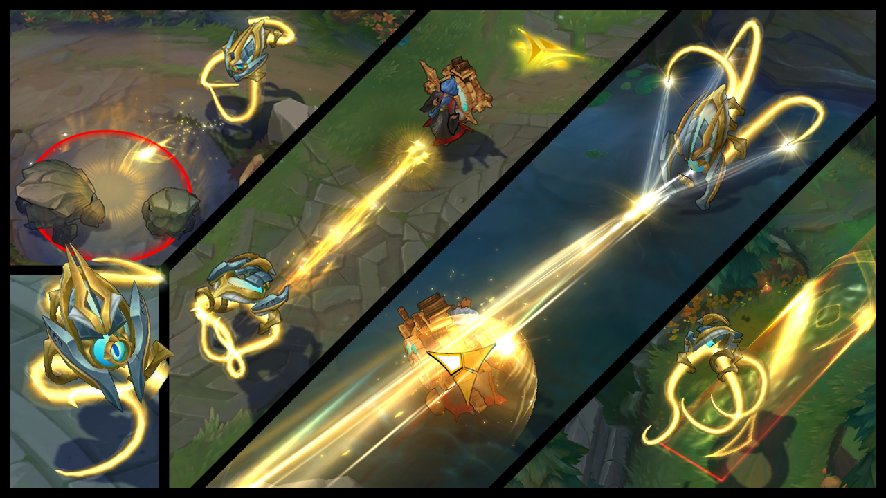

Lymphocyte are one of the most furious and aggressive Legend in the field, With their experience and training to survive and adapt in any circumstance make them have no fear and ready to do whatever it takes to triumph upon their enemies.Their passive ability is called "Phagocytosis" after Lymphocyte done their finishing move on their enemy they consume them replenish their ammunition,health and shield in their inventory and grant temporary healing overtime which will stop as soon as they received damage
Lymphocyte's tactical ability is the reason Lymphocyte are mastered of survival and cheekiness,"Mitosis" allow Lymphocyte to sent a little portion of themselves to the specific location which lymphocyte can teleport(growth) from them and can be use through the door or window for a sneaky beaky jump attack against their coward prey. 
When the thing get tough Lymphocyte will not tolerate any risk to them and their teammate, BEWARE !! This is where they are not going to play anymore,Lymphocyte's ultimate ability"Photosynthesis" When Lymhpocyte sensed that the dangerous are close to them and their teammates Lymphocyte will unleash the energy rays that will deal both shield and health massive damage to quickly for their team to finish the job.
